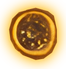
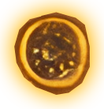

-
Про Гномов
-
Гномбакс (GNBX) — это игровая криптовалюта, которая превращает добычу золота в увлекательное приключение. Пользователи становятся цифровыми гномами, добывающими виртуальное золото в шахтах, создают уникальных персонажей, собирают редкие NFT и строят свою финансовую империю.
-
Имя: Камнедыр Кромош
История:Родом из древнего шахтёрского королевства Гранитания, Камнедыр получил своё имя за талант находить слабые точки в самых крепких камнях
Навык: "Пронзающая кирка" — увеличивает шанс найти дополнительные монеты при каждом ударе.УРОВЕНЬ 1


 

-
Имя: Шурзлат Рунгар
История: Из золотоносных холмов Златогорска пришёл Шурзлат, известный своим чутьём на драгоценные минералы.
Навык: "Чутьё золотоискателя" — увеличивает вероятность выпадения редких сундуков.УРОВЕНЬ 2

-
Имя: Кирхсвер Острокоп
История: В Шпильграде, где шахты уходят в небо, Кирхсвер с детства учился добывать камни под углом.
Навык: "Идеальный угол" — увеличивает добычу монет на 20% в течение первых 10 минут игры.УРОВЕНЬ 3

-
Имя: Морлюн Тенешахтер
История: Морлюн родился в заброшенных шахтах Тёмнолесья, где он выжил благодаря своему уму и умению создавать ловушки.
Навык: "Ловушка богатства" — время от времени удваивает добычу монет за определённый период.УРОВЕНЬ 4

-
Имя: Драгнорд Вулканит
История: В жерлах древнего вулкана Кластернии рождаются самые сильные и стойкие гномы.
Навык: "Огненная стойкость" — игнорирует штрафы за труднодоступные шахты, повышая производительность.УРОВЕНЬ 5